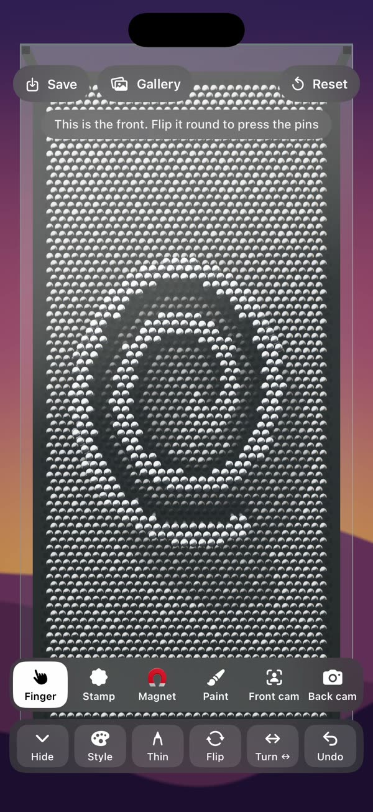
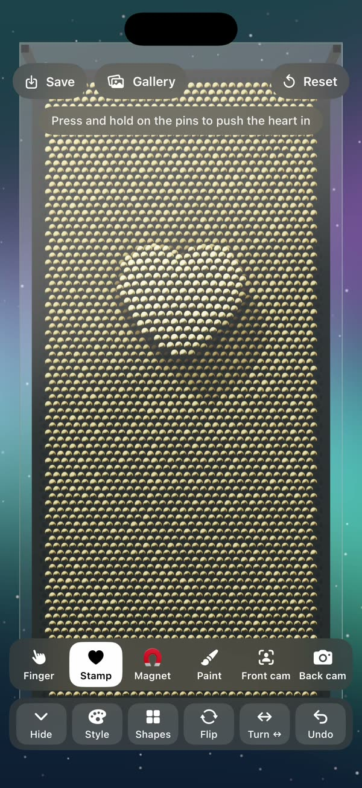
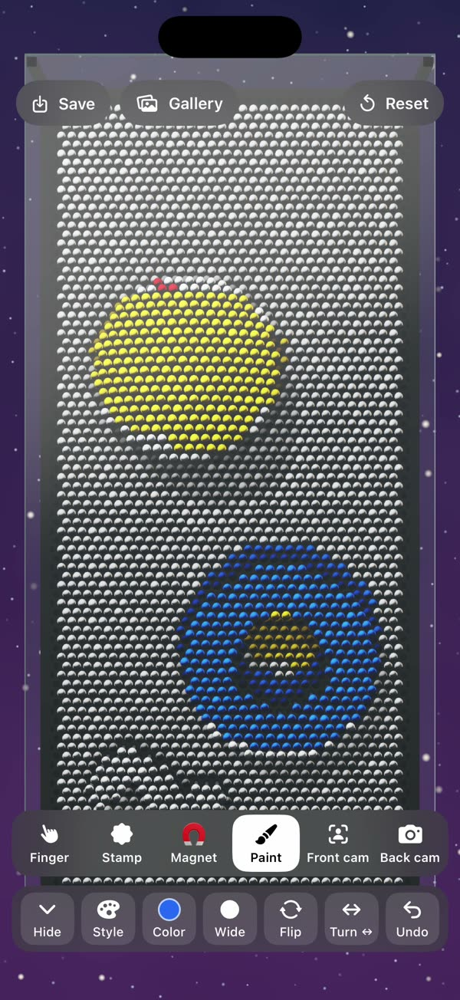
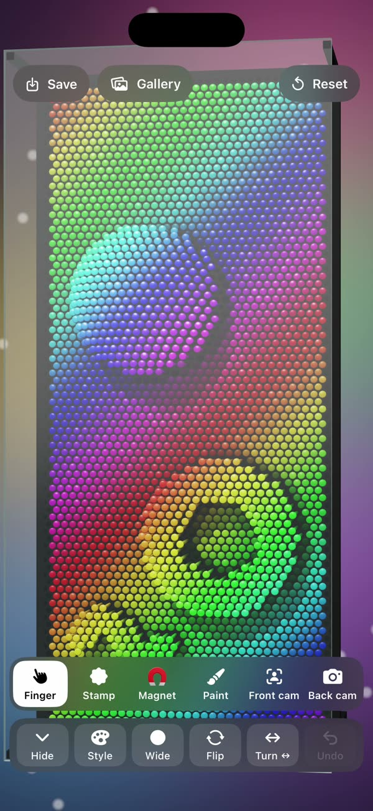

Thousands of pins.
Press anything into them.
Tactile Pins is a pin art toy for iPhone and iPad: a bed of sliding pins that keeps the shape of whatever is pushed into it. A finger, a whole hand, a stamp, or a real toy held up to the camera.
- iPhone and iPad
- Apple Pencil
- No account, no internet
Press. Push the pins from the back, then flip the toy round to see what you made.
A real toy, in 3D
The whole thing is modelled: the board, the corner posts, a slab of clear acrylic on the front, and every pin with its own weight and friction.
Press
One finger, a whole hand, or an Apple Pencil. The longer you hold, the deeper the pins go. Switch to a thin touch for detail.
Stamp
A box of solid shapes in three sizes: hearts, stars, animals, weather and more. Each leaves a clean outline with a rounded 3D shape inside.
Paint
Colour individual pins from either side. Twelve colours, one pin at a time or a whole patch.
Magnet
Pull pins toward you. Draw with raised pins from the front, or rub parts out from the back.
Camera
Point the camera at a toy and move closer: the nearer you get, the further its shape goes in. Front camera too, for a hand or a face.
Tumble
Turn it any way round and pinch to zoom. Gravity is real: tip it glass-up and every pin slides home.
Make it yours
Metal, plastic or rainbow pins, in front of a plain studio, six moving scenes, or a photo of your own.




- Silver
- Gold
- Rose gold
- Copper
- Graphite
- Ten plastic colours
- Rainbow, rings, stripes and confetti
Keep it, or give it to someone
Save where every pin is, with a photo, and carry on with it later from the gallery.
To share one, turn it into a QR code. The creation itself is in the code (pins, paint and finish), so the other iPhone or iPad just scans it. No internet, no account.
The cameras measure depth on the device, with LiDAR or an on-device depth model. Nothing leaves it.